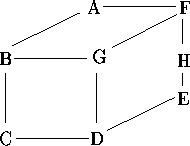
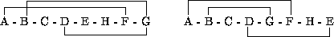

| Bandwidth |
Given a graph (V,E) where V is a set of nodes and E is a set of arcs in VxV, and an ordering on the elements in V, then the bandwidth of a node v is defined as the maximum distance in the ordering between v and any node to which it is connected in the graph. The bandwidth of the ordering is then defined as the maximum of the individual bandwidths. For example, consider the following graph:

This can be ordered in many ways, two of which are illustrated below:

For these orderings, the bandwidths of the nodes (in order) are 6, 6, 1, 4, 1, 1, 6, 6 giving an ordering bandwidth of 6, and 5, 3, 1, 4, 3, 5, 1, 4 giving an ordering bandwidth of 5.
Write a program that will find the ordering of a graph that minimises the bandwidth.
Input will consist of a series of graphs. Each graph will appear on a line by itself. The entire file will be terminated by a line consisting of a single #. For each graph, the input will consist of a series of records separated by `;'. Each record will consist of a node name (a single upper case character in the the range `A' to `Z'), followed by a `:' and at least one of its neighbours. The graph will contain no more than 8 nodes.
Output will consist of one line for each graph, listing the ordering of the nodes followed by an arrow (->) and the bandwidth for that ordering. All items must be separated from their neighbours by exactly one space. If more than one ordering produces the same bandwidth, then choose the smallest in lexicographic ordering, that is the one that would appear first in an alphabetic listing.
A:FB;B:GC;D:GC;F:AGH;E:HD #
A B C F G D H E -> 3